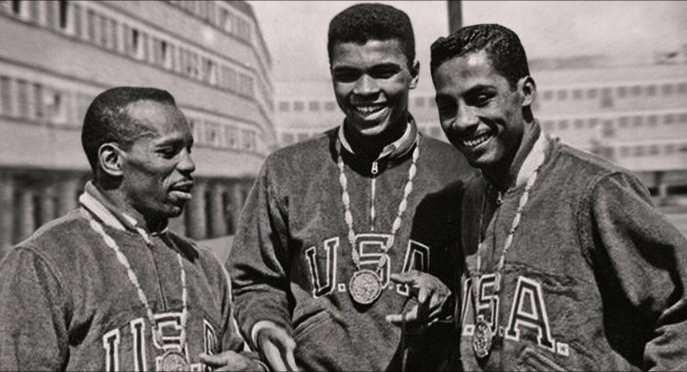

Muhammad Ali, born Cassius Marcellus Clay Jr. on January 17, 1942, in Louisville, Kentucky, emerged from humble
beginnings to become one of the most recognized figures in sports history.
Raised in a segregated America, Ali faced the
harsh realities of racial discrimination and systemic injustice from an early age. His parents, Cassius Clay Sr.
and
Odessa Clay, instilled in him a strong sense of self-worth and pride in his African American heritage.
As a child, Ali
was often exposed to the complexities of race relations in the South, which shaped his understanding of social justice.
At the age of 12, after his bicycle was stolen, he took up boxing to learn self-defense, motivated not only by a desire
to protect himself but also by a need to prove his strength and resilience.
He began training at the local Columbia Gym
under the guidance of trainer Joe Martin, quickly showing promise as a fighter.
Ali's early dedication to the sport,
coupled with his natural talent and flair for performance, laid the groundwork for
what would become an illustrious
amateur career and, ultimately, a transformative impact on the world of sports and beyond.
|
|
ali's rise to prominens in the bo boxing world was solidified when he catured a gold medal in the light heavyweight division at 1960 rome Olympics. his electrifying in the showcasednot only his exceptional boxing skills but also his ability to cuptur public's imagination with his charismaand confidence. ali's playful tauntingof his opponentsand his signaturestyle of predicting the outcomes of his fight made him a medya sensation . however , his olympic victory wa bittersweet; upon returning home to Louisville, he faced the same racial discrimination that always been part of his life including being denied service at a local restaurant . this painful experience deepened his resolve to advocate for social change and justice for african Americans . following his olympic triumpt , ali turned professional, quickly becoming a formidable sonny to liston to claim the heavyweight title . it at pivotal moment that announcedhis conversion to islam and adopted the name muhammad ali, marking a profound shift in both his identity and public persona.
|  |